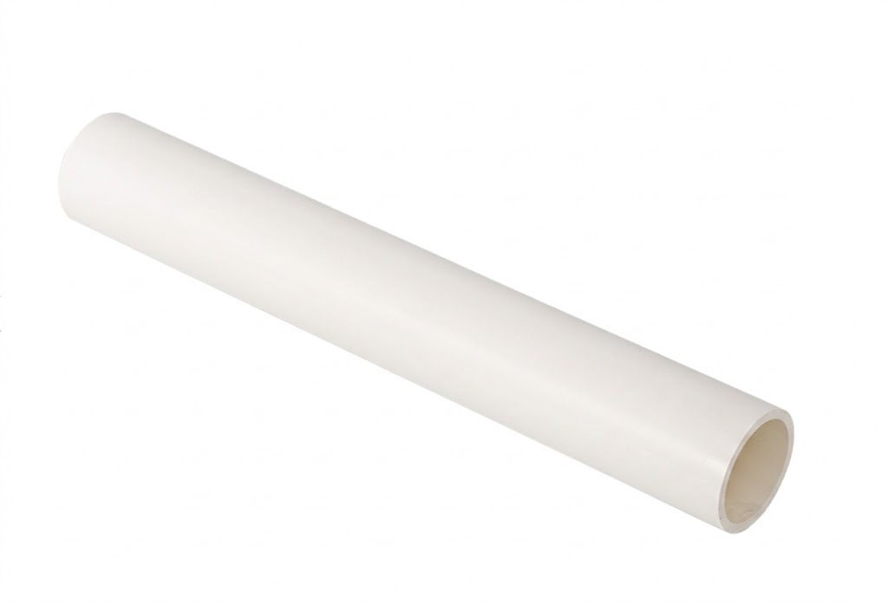
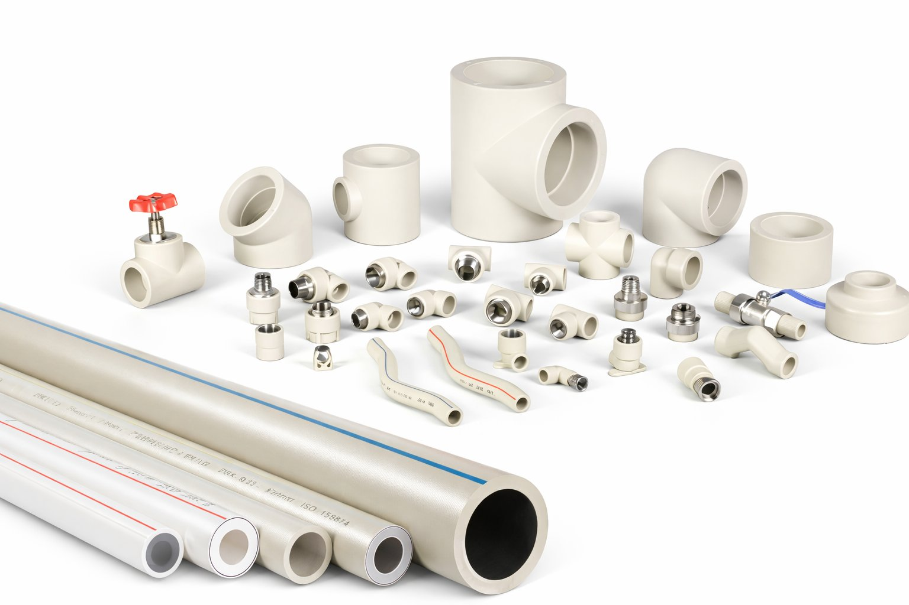
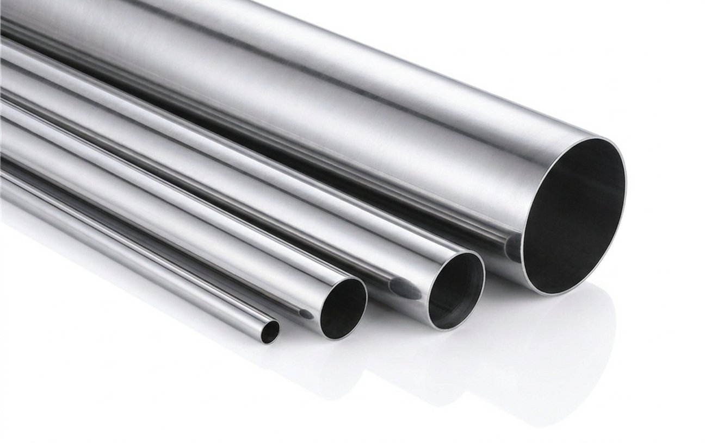

Water Supply
HDPE Water Supply Pipe
PE80 and PE100 piping for municipal, building and buried water networks, with fusion jointing options.
Water Supply · Catalogue reference
Unplasticized PVC piping for water supply and irrigation projects. The Victory Global Materials catalogue lists sizes from 20 to 630 mm and pressure classes from 0.63 to 2.5 MPa; confirm availability and suitability for the selected configuration.

Product information
These are family-level references from our existing catalogue. Confirm the selected configuration, ratings and availability with your quotation.
| Material | PVC-U |
|---|---|
| Catalogue size range | 20–630 mm |
| Catalogue pressure-class range | 0.63–2.5 MPa; configuration dependent |
Where it is used
Project suitability depends on the selected product and installation requirements.
Plan your enquiry
Supporting evidence
Buyer questions
The existing catalogue lists 20–630 mm and 0.63–2.5 MPa across this family. These are catalogue ranges rather than a promise that every size is available in every pressure class; specify both in your enquiry.
State that the pipe will carry drinking water and request water-contact documentation for the selected manufacturer's product. Confirm the applicable project standard and the scope of the supporting evidence.
Explore the catalogue
PE80 and PE100 piping for municipal, building and buried water networks, with fusion jointing options.

PP-R pipes, valves, elbows, tees and reducers for hot and cold water systems with heat fusion jointing.

304, 304L and 316L stainless steel water piping. Catalogue diameter range: DN10–DN300.
Start your project
Share the product, specification, quantity and destination so your requirements can be reviewed.
Prepare your enquiryVictory Global Materials
Address: 1703B-04, Dabaihui Plaza
Futian District, Shenzhen
Guangdong, China
Email: info@victory-global.cn
Telephone: +86 18664333510
WeChat: +86 18664333510
WhatsApp: +65 89736956